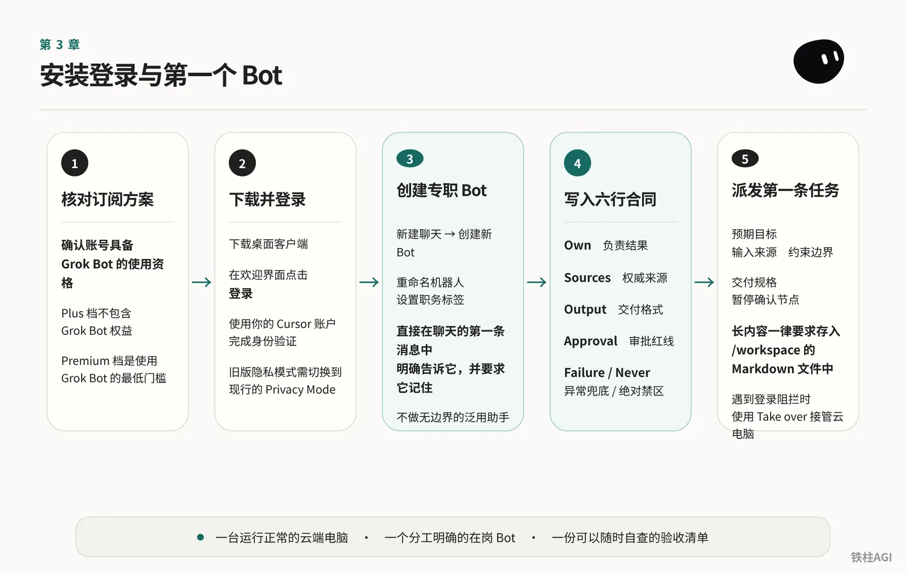
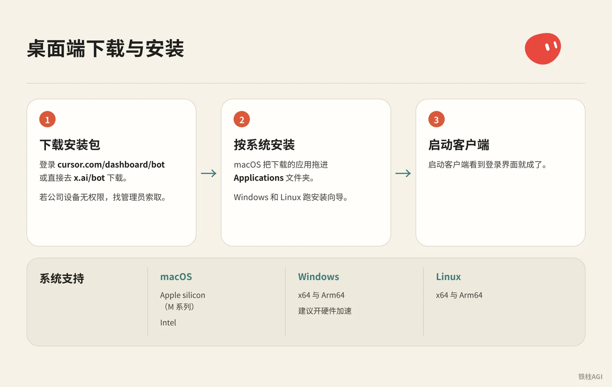
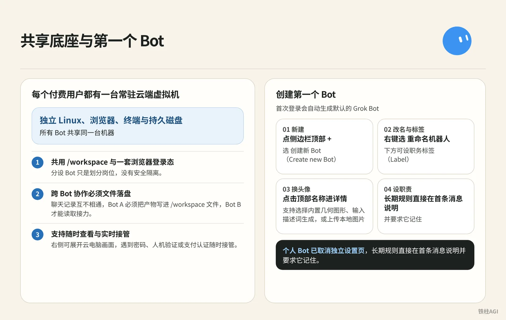
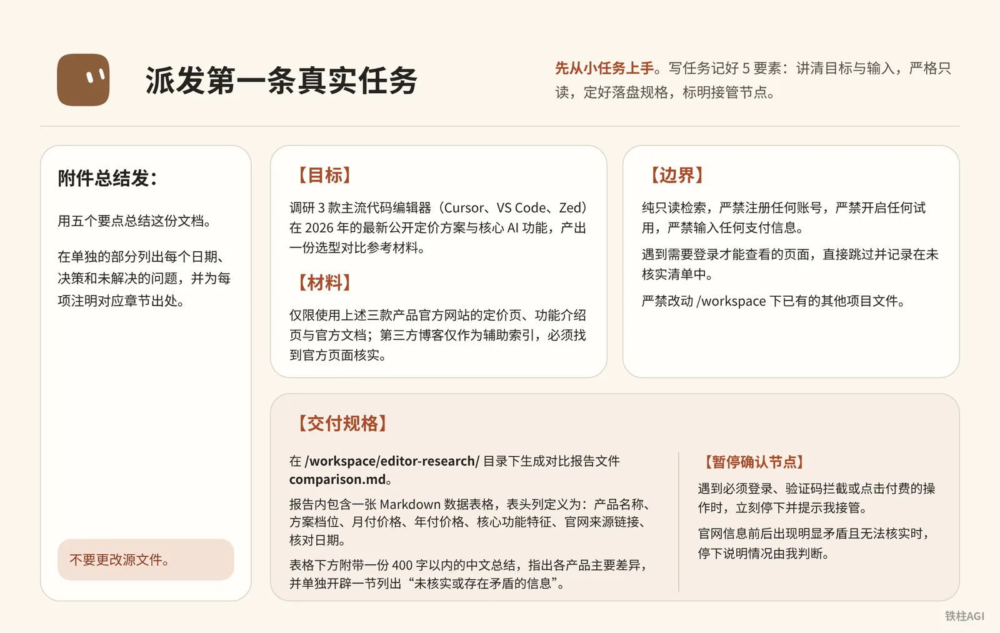

铁柱AGI · 17/60
第 3 章 安装登录与第一个 Bot
确认订阅含 Bot 权益，不然没入口；登录跳循环查隐私设置。别建无约束的“全能助手”白耗周配额。
- 装好桌面与移动端，排除登录报错
- 建专属 Bot 填六行合同
- 派发首条落盘任务，对照清单验收

订阅方案核对与开通条件
下载前先看账号资格，Grok Bot (xAI's AI assistant that comes with its own computer) 必须绑定有效订阅才能用。
| 方案名称 | 价格 | 是否包含 Grok Bot | 额度 (quota (how much use your plan allows))说明 |
|---|---|---|---|
| The X Plus | $8 / 月 | 否 | 仅普通模型对话，无 Bot 权限 |
| The X Premium | $30 / 月（年付 $300） | 是 | 4x 额度，个人入门最低门槛 |
| The X Super | $100 / 月（年付 $1000） | 是 | 15x 额度 |
| The X Ultra | $200 / 月（年付 $2000） | 是 | 50x 额度 |
| Cursor Pro / Pro+ / Ultra | 见官网定价 | 是 | 依档位提供每周额度 |
| Cursor Teams (自助席位) | 见官网定价 | 是 | 成员共享团队配额 |
- 每月 8 美元的 Plus 档不包含 Bot 权益，买了用不了。
- X 关联额度与 Cursor 订阅额度不叠加，系统结算自动按每周用量更高的一方算。
方案底座机制参考社区文章 《1.1 Grok Bot 是什么：一页看懂》 与 《万文长｜Grok Bot 从零入门第一次上》。
桌面端下载与安装

macOS 支持 Apple silicon（M 系列）与 Intel，Windows 和 Linux 支持 x64 与 Arm64（Win 建议开硬件加速）。
- 登录
cursor.com/dashboard/bot或直接去x.ai/bot下载安装包。若公司设备无权限，找管理员索取。 - macOS 把下载的应用拖进
Applications文件夹，Windows 和 Linux 跑安装向导。 - 启动客户端看到登录界面就成了。具体操作可参考文档 Grok Bot 快速入门。
账号登录与隐私模式配置
- 启动客户端点 登录，在浏览器直接用 Cursor 账号认证，企业 SSO 会自动生效；如果是 Grok Business 席位，选 Sign in with Grok 登录。
- 认证完成后进客户端“设置”，能看到账号邮箱和方案状态就说明成功了。
旧版隐私模式（Privacy Mode (Legacy)）必须切到现行 Privacy Mode 才能继续。个人用户在弹窗点确认即可；团队成员需要让管理员去 Team Settings 里更新。
详细说明参考官方文档 入职 与 登录 Grok Bot。
常见登录问题与故障排查
盲目重装没用，多是缓存或会话刷新问题。
- 客户端升至最新并重登。
- 清
cursor.com与x.ai的 Cookie 或用无痕模式。 - 登
x.ai/bot确认网页端能建立会话。 - 刚改订阅静置等 30 至 60 分钟，刷新后报错消除。
手机验证连错会触发风控锁定，无法自愈。排查无效或遇 OAuth (a safe sign-in that gives an app access without sharing your password) 报错，去支持页提工单，附邮箱与截图，写明版本及步骤。
详见 登录 Grok Bot。
iOS 移动端安装与双端协同
安装与登录
- 系统需 iOS 18 或更高版本。
- App Store 搜 Grok Bot 安装，登录同个 Cursor 账号自动同步，无需重复付费。
双端分工
- 手机端适合日常监控，能看实时屏幕，支持接管控制（Take over）输验证码、审批（Allow / Deny）或启停 Routine (a task the bot runs on a schedule or a trigger)。
- 深度操作必须回桌面端：最长 10 分钟录屏教学（Teach a task）、测试 Routine（Test run）与维护云电脑（Update / Recover）。
通知管理
- 单个 Bot 静音：聊天页点顶部名字关闭 Notifications，桌面端发消息也能关。
- 全局关闭：在系统“设置”中关闭 Grok Bot 的通知权限。
详见 移动端 Grok Bot。
认识共享底座与创建第一个 Bot

每个付费用户都有一台常驻云端虚拟机，配置独立 Linux、浏览器、终端与持久磁盘（早期测试配置约 8 核 16GB 内存，未核实，具体以官方为准）。
这台机器有三个直接影响操作的物理边界：
- 所有 Bot 共享同一台机器：共用
/workspace与一套浏览器登录态，分设 Bot 只是划分岗位，没有安全隔离。 - 跨 Bot 协作必须文件落盘：聊天记录互不相通，Bot A 必须把产物写进
/workspace文件，Bot B 才能读取接力。 - 支持随时查看与实时接管：右侧可展开云电脑画面，遇到密码、人机验证或支付认证随时接管，不要把凭证打在输入框里。
首次登录会自动生成默认的 Grok Bot，手动新建与设置步骤如下：
- 新建：点侧边栏顶部 +（或 Cmd+N），选 创建新 Bot（Create new Bot）。在输入框先输名字也能直接点击创建。
- 改名与标签：右键选 重命名机器人，或点顶部名称展开面板修改。下方可设职务标签（Label，手机端为 Title (optional)）。
- 换头像：点击顶部名称进详情并点击头像，支持选择内置几何图形、输入描述词生成，或上传 25 MB 以内的本地图片（手机端可选相册、生成或移除）。
- 设职责：个人 Bot 已取消独立设置页，长期规则直接在首条消息说明并要求它记住。团队 Bot 在详情“关于”栏仍保留固定描述区。
编写职责：标准六行合同
合同结构与模板
新手别给空泛头衔，把六项核心约束直接写进第一条消息，让它当成长期规则记住。
- Own（负责结果）：明确长期负责的具体指标，不做泛用助手。
- Sources（权威来源）：限定只看官网或指定链接，禁止使用不明信源。
- Output（交付格式）：规定保存路径、命名规则和摘要字数。
- Approval（审批红线）：发信、提交表单或删文件等高危操作，必须等人工弹窗批准。
- Failure（异常兜底）：遇到网页失效或数据缺失，必须明确标注，严禁脑补推测。
- Never（绝对禁区）：禁止改动源文件，禁止凭记忆 (memory (facts the bot keeps between chats))概述，禁止点击付款按钮。
Bot 命名好后，替换模版字段直接发送。
合同结构与模板
请牢记你的长期工作职责，在今后的工作中始终遵循以下要求：
Own: 负责监控目标清单的每周功能与定价变动，输出结构化对比材料。
Sources: 仅限使用目标官方网站的定价页、Changelog 页面以及我通过附件提供的官方说明文档。
Output: 提炼核心动态，附带核对日期与原始出处链接，长文本与数据表格必须保存至 /workspace/research/ 下的 Markdown 文件中，对话框中只发简要完成汇报。
Approval: 涉及发送任何邮件、对外发帖、提交表单、删除文件或进行任何费用支付前，必须停下来等待我的人工批准。
Failure: 若目标页面无法访问或内容缺失，在报告中明确标注为“未取得一手数据”，严禁推测或编造任何功能与价格。
Never: 严禁修改我上传的任何源文件，在源系统可访问时严禁依赖自身训练记忆进行主观概括。
今后的工作中请记住这些要求。实践案例
金尘马在 《万字长文｜Grok Bot 从入门到精通｜金尘马》 中，把长期职责与单次需求严格分开。
长期规则管信源和交付，当次消息只派具体调研主题；缺一手数据直接说明，严禁猜数字。
Today 在 《万文长｜Grok Bot 从零入门第一次上》 中设置了安全边界，将只读与有外部后果的操作隔离开。
每次只调研一个竞品并附带公开来源链接，分清事实与推测；涉及登录付款一律停下等确认。
演化规则参阅 《1.1 Grok Bot 是什么：一页看懂》。
派发第一条真实任务

先从小任务上手。写任务记好 5 要素：讲清目标与输入，严格只读（禁改源文件、注册与支付），定好落盘规格，标明接管节点。
附件总结发：
用五个要点总结这份文档。
在单独的部分列出每个日期、决策和未解决的问题，并为每项注明对应章节出处。
不要更改源文件。查竞品定价落盘发：
派发第一条真实任务
【目标】
调研 3 款主流代码编辑器（Cursor、VS Code、Zed）在 2026 年的最新公开定价方案与核心 AI 功能，产出一份选型对比参考材料。
【材料】
1. 仅限使用上述三款产品官方网站的定价页、功能介绍页与官方文档；第三方博客仅作为辅助索引，必须找到官方页面核实。
2. 记录每一项数据的原始官方 URL 与数据核对日期。
【边界】
1. 纯只读检索，严禁注册任何账号，严禁开启任何试用，严禁输入任何支付信息。
2. 遇到需要登录才能查看的页面，直接跳过并记录在未核实清单中。
3. 严禁改动 /workspace 下已有的其他项目文件。
【交付规格】
1. 在 /workspace/editor-research/ 目录下生成对比报告文件 comparison.md。
2. 报告内包含一张 Markdown 数据表格，表头列定义为：产品名称、方案档位、月付价格、年付价格、核心功能特征、官网来源链接、核对日期。
3. 表格下方附带一份 400 字以内的中文总结，指出各产品主要差异，并单独开辟一节列出“未核实或存在矛盾的信息”。
4. 对话框中仅需回复已完成落盘的简短提示及文件绝对路径。
【暂停确认节点】
1. 遇到必须登录、验证码拦截或点击付费的操作时，立刻停下并提示我接管。
2. 官网信息前后出现明显矛盾且无法核实时，停下说明情况由我判断。遇登录、2FA 或滑块验证时：
- 点 Take over 手动处理，弄完点 I'm done 继续，跳过点 Skip。
- 跑完确认
/workspace/editor-research/comparison.md完整保存。
规范见 使用 Grok Bot 与 入职。
容易踩的坑
- 8 美元 Plus 档没 Bot，必须选每月 30 美元的 Premium 档。
- 所有 Bot 共享云电脑与配额，先跑通一个，别建十几个互相打架。
- 别在聊天框发密码或 API (a way for programs to talk to each other) Key，用 Take over 接管输入或填安全卡片。
- 长文本一律存入
/workspace的 Markdown 文件，防污染上下文。 - 登录报错别重装，清理
cursor.com和x.ai的 Cookie，或等 30 至 60 分钟。 - 不同 Bot 共享虚拟机和浏览器会话，不能隔离权限。
- Teach a task、Test run 和系统恢复是桌面端独有，iOS 端没有。
做完怎么验收
- 进 Usage & Billing，付费档有效、用量正常。
- 桌面端右屏能拉起，无 Reconnecting 报错。
- iPhone（iOS 18+）登相同 Cursor 账号，无二次购买提示。
- 发六行合同，Bot 明确回复已记住长期规则。
- 云电脑
/workspace按指令生成目标文件。 - 遇登录等操作，Bot 主动暂停并弹 Action needed 卡片。
- 故意喂死链，报告明确标注 未取得一手数据、不瞎编。
延伸阅读
相关章节
官方页面
- Grok Bot 快速入门 (Get Started)
- 入职 (Onboarding)
- 登录 Grok Bot (Sign In)
- 移动端 Grok Bot (Mobile)
- 更改 Bot 的名称、头像和职责 (Edit Bot)